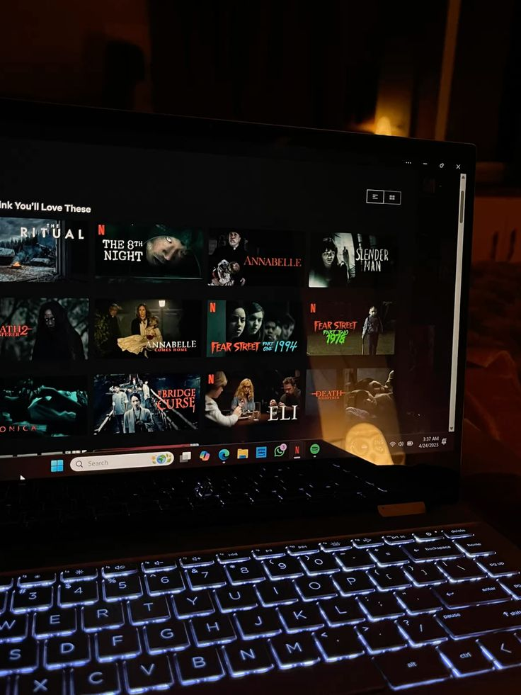
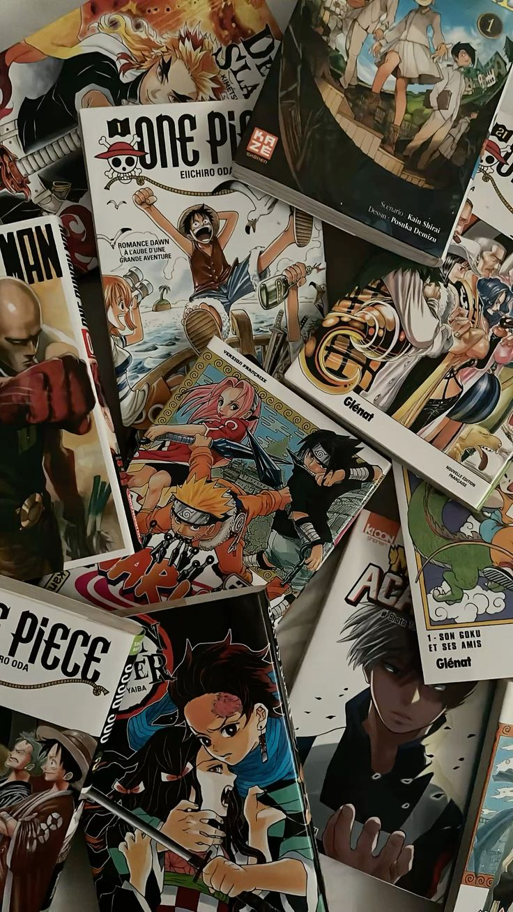
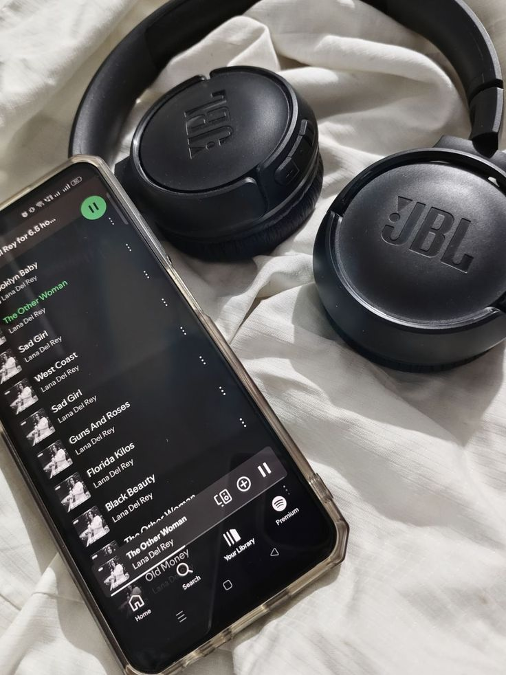

FILMES E SÉRIES

Filmes e séries estão na minha vida dês de antes dos livros. Suspense, fantasia, romance e histórias que me cativam.
FAVORITOS DA VIDA
- Vikings
- Teen Wolf
- Coraline
- Estranho mundo de Jack
- Como treinar o seu dragão
“Além dos livros, existem outros mundos
que me inspiram, me distraem e
me fazem esquecer da realidade.”

Filmes e séries estão na minha vida dês de antes dos livros. Suspense, fantasia, romance e histórias que me cativam.

Histórias intensas, personagens incríveis e mundos que me prendem do começo ao fim.

Trilhas sonoras da minha vida. Literalmente nao vivo na rua sem meu fones de ouvido.

Um dos meus hobbies mais antigos. Dês de pequena sendo introduzida pela minha irmã. Games sempre me fazem surtar (de raiva ou de emoção).
O mais novo vício. Ainda aprendendo tudo, mas já completamente doida por esse esporte.